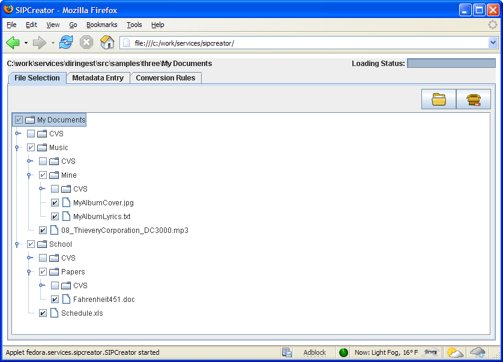
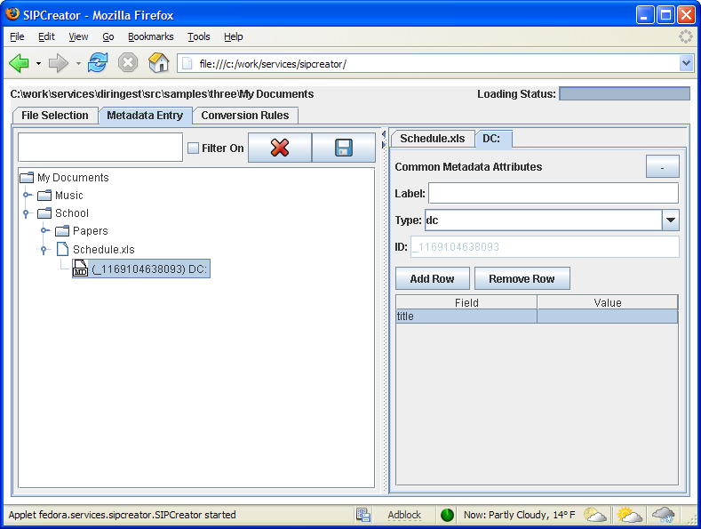
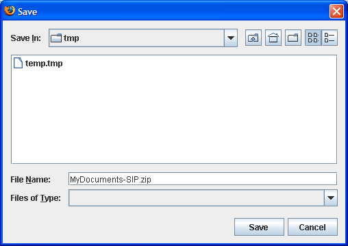

The Fedora SIP Creator is a Java applet for preparing Submission Information Packages ("SIPs") for use with the Fedora Directory Ingest Service.
First, the applet must be compiled:
keytool -genkey -alias samplekey -storepass samplepass -keystore keystore
and answer the prompts. This will generate a keystore file that
will be used to digitally sign the applet jar file during the build.ant dist. This will build the signed applet
jar into the dist/ directory.If desired, copy the content of the dist/ directory to a web-accessible location.


